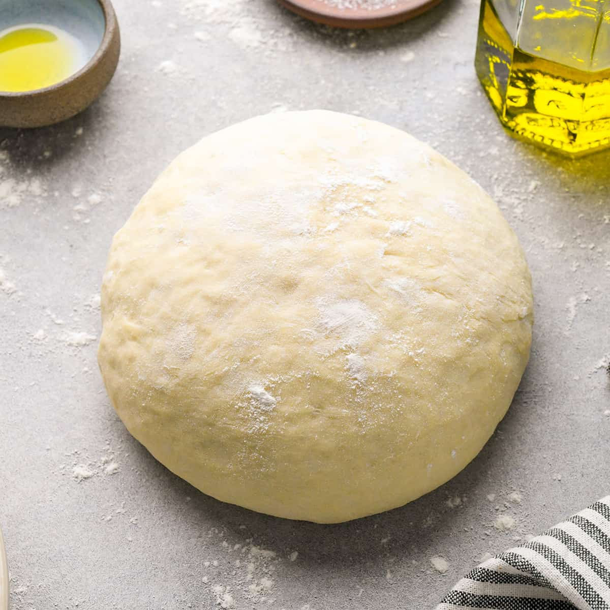

Pizza Dough

Description
This is a one version of a pizza dough I used to make when I was a kid and still had aspirations of becoming a chef. It worked well with the sort of pseudo-Chicago style pizza I was making (which is one of the other recipes on this site).
At the time I wrote this down, I seem to have been adding a lot of herbs and spices to all my recipes. The herbs are in fact optional, though they do add a flavor profile to the dough that is reminsicent of certain Italian pizzas or flatbreads.
Ingredients
- 1 tbsp basil
- 1 tbsp oregano
- 1 tbsp rosemary
- 1 tbsp onion powder
- 1 tbsp black pepper
- 1 tbsp fresh garlic, minced
- 1 1/2 cups warm water (110° to 115°)
- 2 tbsp sugar
- 2 1/2 tsp active dry yeast
- 1 1/2 tsp salt
- 2 tbsp olive oil
- 4 cups white all purpose flour
Directions
- Pour the warm water into a large bowl and add both the sugar and the yeast. Stir until dissolved, then let it sit for ten minutes
- Add the salt, olive oil, basil, oregano, rosemary, onion powder, black pepper, and garlic to the bowl. Stir well.
- Add 1 cup of the flour and whisk until thoroughly mixed. Add another cup of flour and whisk. Repeat with the third cup. It will be very thick now, so add the last cup of flour and mix it up as best you can, then use your hands to knead the rest of the flour into the dough.
- Place the dough on a flat surface and knead it. If sticky, dust with flour. To knead, fold the dough in half, then into quarters, then press flat and repeat. Do this for ten minutes. When the dough is no longer sticky, you should be done.
- Form dough into a ball and coat with olive oil. Place dough into large bowl that is also coated with olive oil. Cover the bowl with plastic wrap and set somewhere warm (e.g. an oven that is turned off). Let rise for about an hour.
- After dough has risen, remove the dough from the bowl and cut in half. Each half will make one pizza. Flatten each ball to remove air pockets, then reform it into a ball.
- To remove any "cracks" in the dough, fold the dough into itself around the crack as you might do with a sock. Continue until the dough is relatively consistent
- You can either use the dough immediately or store it. The dough will keep in the freezer for up to three months